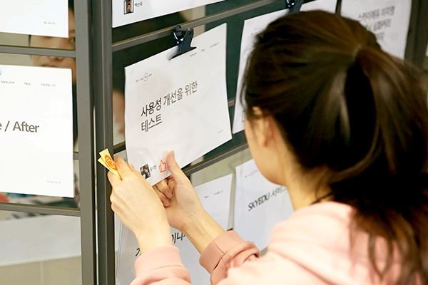
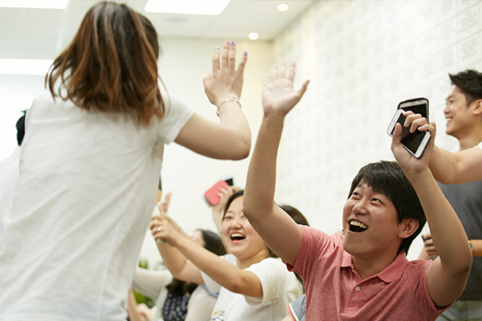
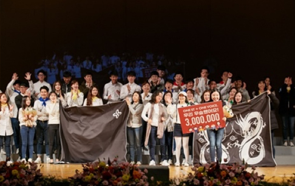
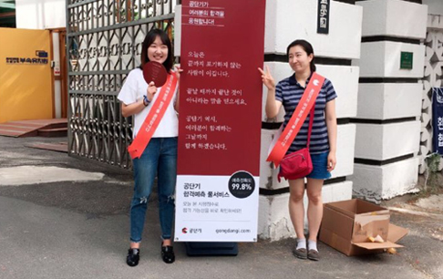
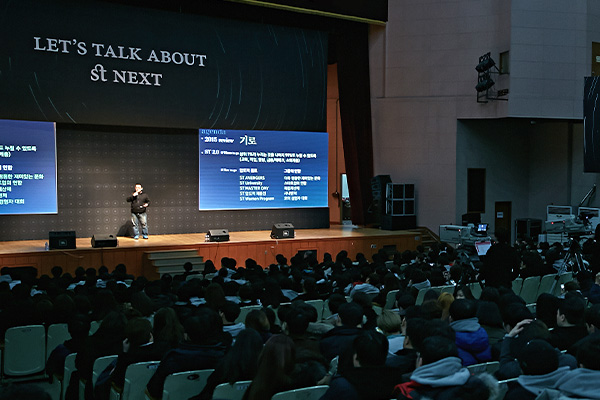
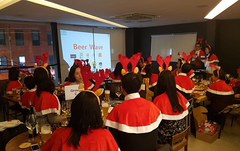

Culture
회사와 직원이 함께 가치와 문화를 만듭니다.
ST!S
-
- SERVANT
- 우리는 섬김의 가치를 공유합니다.
- >ST Culture의 대전제는 ‘우리는 서로 섬김으로써 자유로워진다’입니다. 전 직원이 어떻게 서로를 도울 수 있을지를 고민하며 행동하고자 노력합니다. 매주 월요일 오전에는 전사 회의가 열립니다. 직급이나 부서 상관없이 서로의 발전을 위해서 의견을 내고, CEO에게 이의를 제기할 수도 있습니다. 어느 부서에서든 큰 이벤트나 사람들 도움이 필요한 일이 있을 때 전체 참여를 원칙으로 합니다. 특히, 시험장 이벤트는 우리만의 문화를 잘 드러내는 장면입니다.
-
- THOUGHTFULNESS
- 우리는 감사받을 수 있는 일을 합니다.
- ST Culture의 대전제는 ‘우리는 서로 섬김으로써 자유로워진다’입니다. 전 직원이 어떻게 서로를 도울 수 있을지를 고민하며 행동하고자 노력합니다. 매주 월요일 오전에는 전사 회의가 열립니다. 직급이나 부서 상관없이 서로의 발전을 위해서 의견을 내고, CEO에게 이의를 제기할 수도 있습니다. 어느 부서에서든 큰 이벤트나 사람들 도움이 필요한 일이 있을 때 전체 참여를 원칙으로 합니다. 특히, 시험장 이벤트는 우리만의 문화를 잘 드러내는 장면입니다.
-
- INNOVATION
- 우리는 혁신을 거듭합니다.
- ST Culture의 대전제는 ‘우리는 서로 섬김으로써 자유로워진다’입니다. 전 직원이 어떻게 서로를 도울 수 있을지를 고민하며 행동하고자 노력합니다. 매주 월요일 오전에는 전사 회의가 열립니다. 직급이나 부서 상관없이 서로의 발전을 위해서 의견을 내고, CEO에게 이의를 제기할 수도 있습니다. 어느 부서에서든 큰 이벤트나 사람들 도움이 필요한 일이 있을 때 전체 참여를 원칙으로 합니다. 특히, 시험장 이벤트는 우리만의 문화를 잘 드러내는 장면입니다.
-
- SSPEED
- 우리에게 스피드는 모든 업무의 기본입니다.
- ST Culture의 대전제는 ‘우리는 서로 섬김으로써 자유로워진다’입니다. 전 직원이 어떻게 서로를 도울 수 있을지를 고민하며 행동하고자 노력합니다. 매주 월요일 오전에는 전사 회의가 열립니다. 직급이나 부서 상관없이 서로의 발전을 위해서 의견을 내고, CEO에게 이의를 제기할 수도 있습니다. 어느 부서에서든 큰 이벤트나 사람들 도움이 필요한 일이 있을 때 전체 참여를 원칙으로 합니다. 특히, 시험장 이벤트는 우리만의 문화를 잘 드러내는 장면입니다.
모든 STian은 책임자(Director)로서 자신의 업무를 주도적으로 진행하며 서로 ‘OO님’이라고 부르는 수평적인 기업문화를 통해 자유롭게 협업하고 토론합니다.
STian Life
-  전사 전시회
-  전사 탁구대회
-  전사 합창대회
-  응원 이벤트
-  ST NEXT
-  크리스마스 파티